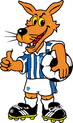
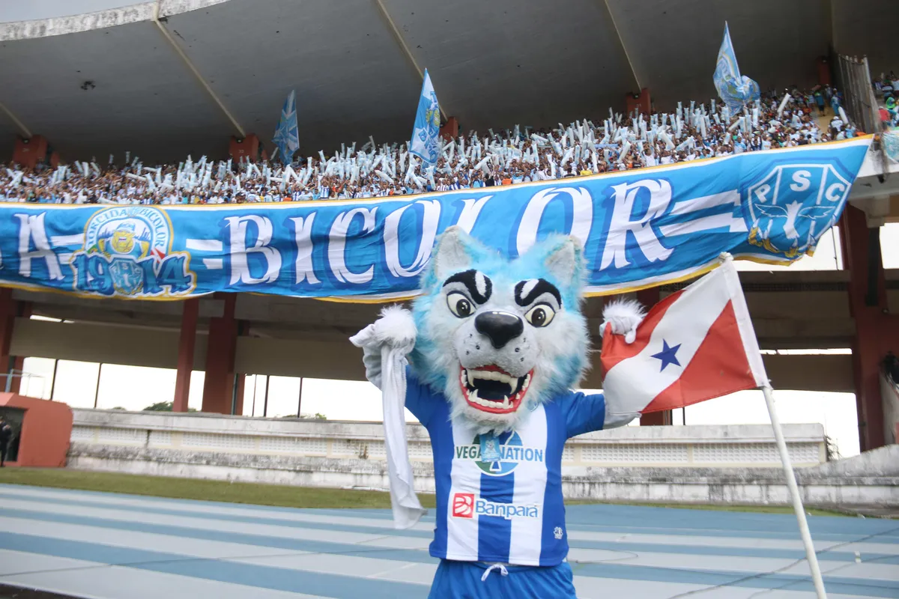
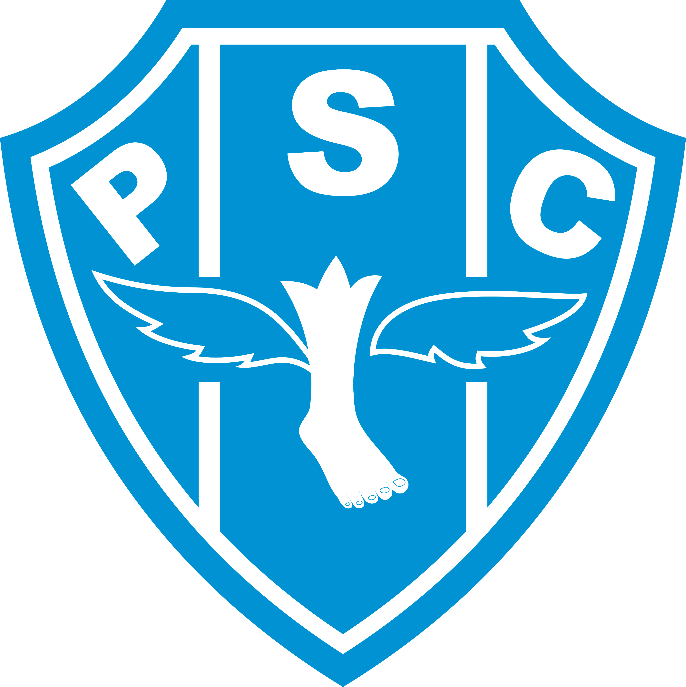

| Paysandu |  |
|---|---|
|
|
|

O Paysandu Sport Club, conhecido como Papão da Curuzu, é um dos clubes de futebol mais tradicionais do Brasil, localizado em Belém, Pará. Fundado em 1914, o clube possui uma rica história e uma torcida apaixonada. O Paysandu é conhecido por suas conquistas regionais e nacionais, incluindo títulos do Campeonato Paraense e a Copa dos Campeões. O clube também é famoso por sua rivalidade com o Clube do Remo, com quem disputa o clássico Re-Pa, um dos maiores clássicos do futebol brasileiro. |
|
|  | |